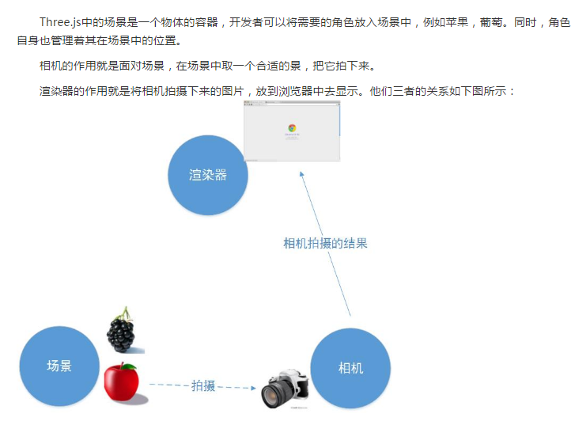

//场景， 只有一种，场景是所有物体的容器， 物体需要放到场景中才能显示.. var scene = new THREE.Scene(); //相机，决定了场景中那个角度的景色会显示出来，像人的眼睛一样，不同的角度看到的景色不同，Three中有多种相机..(e.g 透视相机PerspectiveCamera) var camera = new THREE.PerspectiveCamera(75, window.innerWidth/window.innerHeight, 0.1, 1000); //渲染器，决定了渲染的结果应该画在页面的什么元素上面，并，以怎样的方式来绘制.... var renderer = new THREE.WebGLRenderer(); renderer.setSize(window.innerWidth/2, window.innerHeight/2); //renderer.domElement表示渲染器中的画布,所有的渲染都是画在domElement上的 document.body.appendChild(renderer.domElement); //构造物体 var geometry = new THREE.CubeGeometry(1,1,1); var material = new THREE.MeshBasicMaterial({color: "#FFA500"}); var cube = new THREE.Mesh(geometry, material); //将物体添加进场景 scene.add(cube); //设置视角 camera.position.z = 5; //开始渲染 function render() { requestAnimationFrame(render); cube.rotation.x += 0.1; cube.rotation.y += 0.1; renderer.render(scene, camera); } render();
